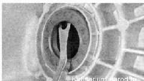
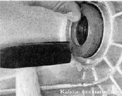

Сальники приводов передних колес - заменаЗамена сальников приводов выполняется без снятия коробки передач с автомобиля. Сальники правого и левого приводов не взаимозаменяемы (номера по каталогу: правый сальник - 2110-230Ю34 или 2110-2301034-01;левый сальник 2110-2301035 или 2110-2301035-01) Не снимайте оба привода одновременно либо, если это необходимо, устанавливайте вместо одного из них специальную оправку, препятствующую выпадению полуосевых шестерен из коробки дифференциала. Снятие 1. Подготавливаем автомобиль к выполнению работы. 2. Сливаем масло из коробки передач. 3. Вынимаем привод. 4. Поддев сальник большой шлицевой отверткой или монтажной лопаткой, извлекаем его из картера коробки передач. Установка Смазываем рабочую кромку нового сальника трансмиссионным маслом и запрессовываем его, используя старый сальник как оправку. Сальник привода второго колеса заменяем аналогично. |